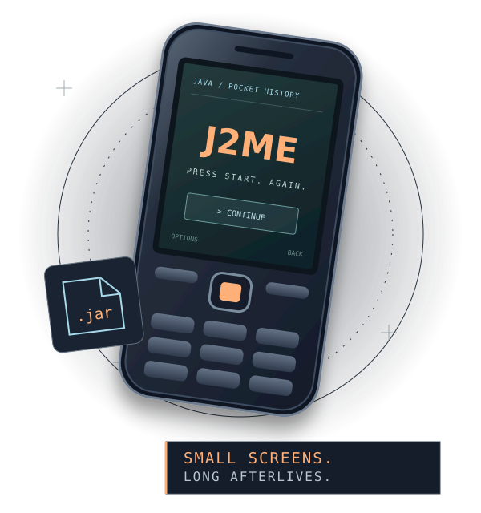

Before the app store,
there was the .jar.
Games tucked into tiny phones. A different build for seemingly every screen. Follow the titles, the editions, and the trails they left behind.
A source-linked catalog, starting with the J2ME games brought back through Omni Player. Handset labels and title matches stay attached to their evidence.

Back from the tiny screen.
Four places to begin. Each page keeps Wakka’s recorded input edition separate from the other builds found along the way.
Nowhere
English · Sony Ericsson K790
Ratchet & Clank: Going Mobile
English
Silent Hill: Orphan
240×320 · six original languages
God of War: Betrayal
Nokia 352×416 · v1.4.58 · English, French, Spanish, German, Italian, Portuguese
A game. A phone.
A very particular build.
A familiar title can lead to different resolutions, languages, versions, and handset families. The interesting part is keeping those details together.
How this catalog follows the trail ↗- 01
Start with the title.
Search the main catalog by title, alias, credit, or edition label. Every entry has its own page and an original source to follow.
- 02
Look at the editions.
Handsets, versions, languages, and filenames remain as their sources list them. A JAR and its JAD descriptor belong to the same trail.
- 03
Keep the loose ends.
Conflicting credits and uncertain matches are part of the record. A source listing is a lead; an exact recovered input takes more evidence.
There’s a larger paper trail.
Search 16,548 attributed source records from My Abandonware, Kahvibreak, and RG-Backup, plus separate file inventories. These collections overlap, and some include other platforms.